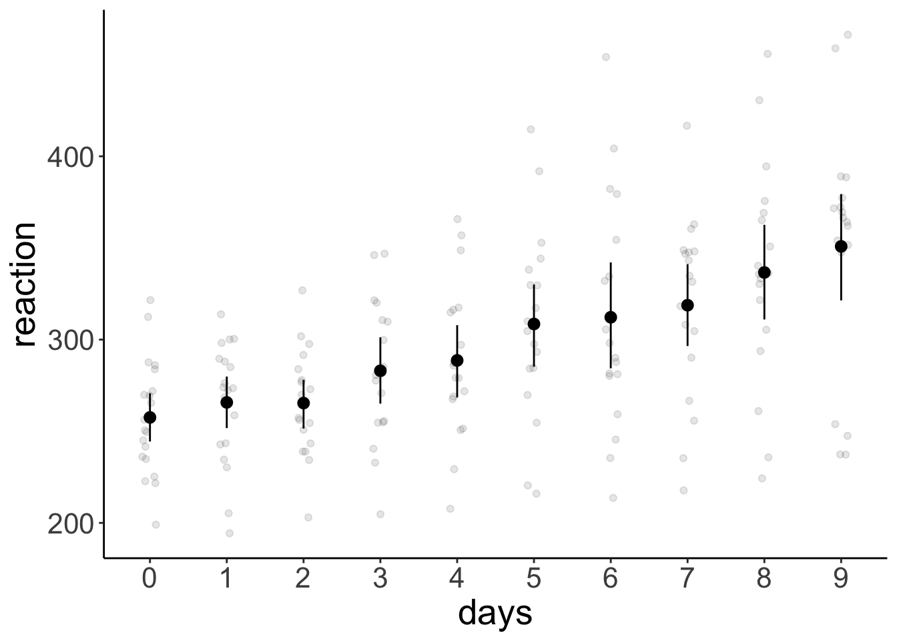

Chapter 10 Linear mixed effects models 4
10.2 Load packages and set plotting theme
library("knitr") # for knitting RMarkdown
library("kableExtra") # for making nice tables
library("janitor") # for cleaning column names
library("broom.mixed") # for tidying up linear mixed effects models
library("lme4") # for linear mixed effects models## Warning: package 'lme4' was built under R version 4.3.1## Warning: package 'Matrix' was built under R version 4.3.1library("afex") # for ANOVAs
library("car") # for ANOVAs
library("datarium") # for ANOVA dataset
library("modelr") # for bootstrapping
library("boot") # also for bootstrapping
library("ggeffects") # for plotting marginal effects## Warning: package 'ggeffects' was built under R version 4.3.1## Warning: package 'emmeans' was built under R version 4.3.1## Warning: package 'ggplot2' was built under R version 4.3.1## Warning: package 'dplyr' was built under R version 4.3.110.3 Load data sets
10.3.1 Sleep data
# load sleepstudy data set
df.sleep = sleepstudy %>%
as_tibble() %>%
clean_names() %>%
mutate(subject = as.character(subject)) %>%
select(subject, days, reaction)
# add two fake participants (with missing data)
df.sleep = df.sleep %>%
bind_rows(tibble(subject = "374",
days = 0:1,
reaction = c(286, 288)),
tibble(subject = "373",
days = 0,
reaction = 245))10.3.4 Politness data
Rows: 84 Columns: 5
── Column specification ────────────────────────────────────────────────────────────────────────────────────────────────────────────────────────────────────────────────────────────────────────────────────
Delimiter: ","
chr (3): subject, gender, attitude
dbl (2): scenario, frequency
ℹ Use `spec()` to retrieve the full column specification for this data.
ℹ Specify the column types or set `show_col_types = FALSE` to quiet this message.10.4 Follow-up tests with emmeans
Just like with the linear model lm(), we can use linear contrasts to test more specific hypotheses with lmer(). The emmeans() function from the emmeans package will be our friend.
10.4.1 Sleep study
Let’s ask some more specific question aboust the sleep study.
- Do reaction times differ between day 0 and the first day of sleep deprivation?
- Do reaction times differ between the first and the second half of the study?
Let’s visualize the data first:
ggplot(data = df.sleep %>%
mutate(days = as.factor(days)),
mapping = aes(x = days,
y = reaction)) +
geom_point(position = position_jitter(width = 0.1),
alpha = 0.1) +
stat_summary(fun.data = "mean_cl_boot")
And now let’s fit the model, and compute the contrasts:
fit = lmer(formula = reaction ~ 1 + days + (1 | subject),
data = df.sleep %>%
mutate(days = as.factor(days)))
contrast = list(first_vs_second = c(-1, 1, rep(0, 8)),
early_vs_late = c(rep(-1, 5)/5, rep(1, 5)/5))
fit %>%
emmeans(specs = "days",
contr = contrast) %>%
pluck("contrasts") contrast estimate SE df t.ratio p.value
first_vs_second 7.82 10.10 156 0.775 0.4398
early_vs_late 53.66 4.65 155 11.534 <.0001
Degrees-of-freedom method: kenward-roger df.sleep %>%
# filter(days %in% c(0, 1)) %>%
group_by(days) %>%
summarize(reaction = mean(reaction))# A tibble: 10 × 2
days reaction
<dbl> <dbl>
1 0 258.
2 1 266.
3 2 265.
4 3 283.
5 4 289.
6 5 309.
7 6 312.
8 7 319.
9 8 337.
10 9 351.df.sleep %>%
mutate(index = ifelse(days %in% 0:4, "early", "late")) %>%
group_by(index) %>%
summarize(reaction = mean(reaction))# A tibble: 2 × 2
index reaction
<chr> <dbl>
1 early 272.
2 late 325.10.4.2 Weight loss study
For the weight loss data set, we want to check:
- Whether there was a difference between the first two vs. the last time point.
- Whether there was a linear trend across the time points.
Let’s first visualize again:
ggplot(data = df.weightloss,
mapping = aes(x = timepoint,
y = score,
group = diet,
color = diet)) +
geom_point(position = position_jitterdodge(dodge.width = 0.5,
jitter.width = 0.1,
jitter.height = 0),
alpha = 0.1) +
stat_summary(fun.data = "mean_cl_boot",
position = position_dodge(width = 0.5)) +
facet_wrap(~ exercises) +
scale_color_brewer(palette = "Set1")
ggplot(data = df.weightloss,
mapping = aes(x = timepoint,
y = score)) +
geom_point(position = position_jitter(width = 0.1),
alpha = 0.1) +
stat_summary(fun.data = "mean_cl_boot") +
scale_color_brewer(palette = "Set1")And then fit the model, and compute the contrasts:
fit = aov_ez(id = "id",
dv = "score",
between = "exercises",
within = c("diet", "timepoint"),
data = df.weightloss)Contrasts set to contr.sum for the following variables: exercisescontrasts = list(first_two_vs_last = c(-0.5, -0.5, 1),
linear_increase = c(-1, 0, 1))
fit %>%
emmeans(spec = "timepoint",
contr = contrasts)$emmeans
timepoint emmean SE df lower.CL upper.CL
t1 11.2 0.169 22 10.9 11.6
t2 12.7 0.174 22 12.3 13.0
t3 14.2 0.182 22 13.8 14.6
Results are averaged over the levels of: exercises, diet
Confidence level used: 0.95
$contrasts
contrast estimate SE df t.ratio p.value
first_two_vs_last 2.24 0.204 22 11.016 <.0001
linear_increase 2.97 0.191 22 15.524 <.0001
Results are averaged over the levels of: exercises, diet Because we only had one observation in each cell of our design, the ANOVA was appropriate here (no data points needed to be aggregated).
Both contrasts are significant.
10.4.3 Politeness study
For the politeness study, we’ll be interested in one particular contrast:
- Was there an effect of attitude on frequency for female participants?
Let’s visualize first:
# overview of the data
ggplot(data = df.politeness,
mapping = aes(x = attitude,
y = frequency,
group = gender,
color = gender)) +
geom_point(position = position_jitter(width = 0.1),
alpha = 0.1) +
stat_summary(fun.data = "mean_cl_boot") +
scale_color_brewer(palette = "Set1")Warning: Removed 1 rows containing non-finite values (`stat_summary()`).Warning: Removed 1 rows containing missing values (`geom_point()`).# variation across scenarios
ggplot(data = df.politeness,
mapping = aes(x = scenario,
y = frequency)) +
geom_point(position = position_jitter(width = 0.1),
alpha = 0.1) +
stat_summary(fun.data = "mean_cl_boot") +
scale_color_brewer(palette = "Set1")Warning: Removed 1 rows containing non-finite values (`stat_summary()`).
Removed 1 rows containing missing values (`geom_point()`).# variation across participants
ggplot(data = df.politeness,
mapping = aes(x = subject,
y = frequency)) +
geom_point(position = position_jitter(width = 0.1),
alpha = 0.1) +
stat_summary(fun.data = "mean_cl_boot") +
scale_color_brewer(palette = "Set1")Warning: Removed 1 rows containing non-finite values (`stat_summary()`).
Removed 1 rows containing missing values (`geom_point()`).We fit the model and compute the contrasts.
fit = lmer(formula = frequency ~ 1 + attitude * gender + (1 | subject) + (1 | scenario),
data = df.politeness)
fit %>%
emmeans(specs = pairwise ~ attitude + gender,
adjust = "none")$emmeans
attitude gender emmean SE df lower.CL upper.CL
inf F 261 16.3 5.73 220.2 301
pol F 233 16.3 5.73 192.8 274
inf M 144 16.3 5.73 104.0 185
pol M 133 16.4 5.80 92.2 173
Degrees-of-freedom method: kenward-roger
Confidence level used: 0.95
$contrasts
contrast estimate SE df t.ratio p.value
inf F - pol F 27.4 7.79 69.00 3.517 0.0008
inf F - inf M 116.2 21.73 4.56 5.348 0.0040
inf F - pol M 128.0 21.77 4.59 5.881 0.0027
pol F - inf M 88.8 21.73 4.56 4.087 0.0115
pol F - pol M 100.6 21.77 4.59 4.623 0.0071
inf M - pol M 11.8 7.90 69.08 1.497 0.1390
Degrees-of-freedom method: kenward-roger Here, I’ve computed all pairwise contrasts. We were only interested in one: inf F - pol F and that one is significant. So the frequency of female participants’ pitch differed between the informal and polite condition.
If we had used an ANOVA approach for this data set, we could have done it like so:
aov_ez(id = "subject",
dv = "frequency",
between = "gender",
within = "attitude",
data = df.politeness)Converting to factor: genderWarning: More than one observation per design cell, aggregating data using `fun_aggregate = mean`.
To turn off this warning, pass `fun_aggregate = mean` explicitly.Warning: Missing values for 1 ID(s), which were removed before analysis:
M4
Below the first few rows (in wide format) of the removed cases with missing data.
subject gender pol inf
# 5 M4 M NA 146.3Contrasts set to contr.sum for the following variables: genderAnova Table (Type 3 tests)
Response: frequency
Effect df MSE F ges p.value
1 gender 1, 3 1729.42 17.22 * .851 .025
2 attitude 1, 3 3.65 309.71 *** .179 <.001
3 gender:attitude 1, 3 3.65 21.30 * .015 .019
---
Signif. codes: 0 '***' 0.001 '**' 0.01 '*' 0.05 '+' 0.1 ' ' 1This approach ignores the variation across scenarios (and just computed the mean instead). Arguably, the lmer() approach is better here as it takes all of the data into account.
10.5 Mixtures of participants
What if we have groups of participants who differ from each other? Let’s generate data for which this is the case.
# make example reproducible
set.seed(1)
sample_size = 20
b0 = 1
b1 = 2
sd_residual = 0.5
sd_participant = 0.5
mean_group1 = 1
mean_group2 = 10
df.mixed = tibble(
condition = rep(0:1, each = sample_size),
participant = rep(1:sample_size, 2)) %>%
group_by(participant) %>%
mutate(group = sample(1:2, size = 1),
intercept = ifelse(group == 1,
rnorm(n(), mean = mean_group1, sd = sd_participant),
rnorm(n(), mean = mean_group2, sd = sd_participant))) %>%
group_by(condition) %>%
mutate(value = b0 + b1 * condition + intercept + rnorm(n(), sd = sd_residual)) %>%
ungroup %>%
mutate(condition = as.factor(condition),
participant = as.factor(participant))10.5.0.1 Ignoring mixture
Let’ first fit a model that ignores the fact that there are two different groups of participants.
# fit model
fit.mixed = lmer(formula = value ~ 1 + condition + (1 | participant),
data = df.mixed)
summary(fit.mixed)Linear mixed model fit by REML. t-tests use Satterthwaite's method [
lmerModLmerTest]
Formula: value ~ 1 + condition + (1 | participant)
Data: df.mixed
REML criterion at convergence: 163.5
Scaled residuals:
Min 1Q Median 3Q Max
-1.62997 -0.41663 -0.05607 0.54750 1.54023
Random effects:
Groups Name Variance Std.Dev.
participant (Intercept) 19.2206 4.3841
Residual 0.3521 0.5934
Number of obs: 40, groups: participant, 20
Fixed effects:
Estimate Std. Error df t value Pr(>|t|)
(Intercept) 5.8729 0.9893 19.3449 5.937 9.54e-06 ***
condition1 1.6652 0.1876 19.0000 8.875 3.47e-08 ***
---
Signif. codes: 0 '***' 0.001 '**' 0.01 '*' 0.05 '.' 0.1 ' ' 1
Correlation of Fixed Effects:
(Intr)
condition1 -0.095Let’s look at the model’s predictions:
fit.mixed %>%
augment() %>%
clean_names() %>%
ggplot(data = .,
mapping = aes(x = condition,
y = value,
group = participant)) +
geom_point(alpha = 0.5) +
geom_line(alpha = 0.5) +
geom_point(aes(y = fitted),
color = "red") +
geom_line(aes(y = fitted),
color = "red")And let’s simulate some data from the fitted model:
# simulated data
fit.mixed %>%
simulate() %>%
bind_cols(df.mixed) %>%
ggplot(data = .,
mapping = aes(x = condition,
y = sim_1,
group = participant)) +
geom_line(alpha = 0.5) +
geom_point(alpha = 0.5)As we can see, the simulated data doesn’t look like the data that was used to fit the model.
10.5.0.2 Modeling mixture
Now, let’s fit a model that takes the differences between groups into account by adding a fixed effect for group.
# fit model
fit.grouped = lmer(formula = value ~ 1 + group + condition + (1 | participant),
data = df.mixed)
summary(fit.grouped)Linear mixed model fit by REML. t-tests use Satterthwaite's method [
lmerModLmerTest]
Formula: value ~ 1 + group + condition + (1 | participant)
Data: df.mixed
REML criterion at convergence: 82.2
Scaled residuals:
Min 1Q Median 3Q Max
-1.61879 -0.61378 0.02557 0.49842 2.19076
Random effects:
Groups Name Variance Std.Dev.
participant (Intercept) 0.09265 0.3044
Residual 0.35208 0.5934
Number of obs: 40, groups: participant, 20
Fixed effects:
Estimate Std. Error df t value Pr(>|t|)
(Intercept) -6.3136 0.3633 20.5655 -17.381 9.10e-14 ***
group 8.7046 0.2366 18.0000 36.791 < 2e-16 ***
condition1 1.6652 0.1876 19.0000 8.875 3.47e-08 ***
---
Signif. codes: 0 '***' 0.001 '**' 0.01 '*' 0.05 '.' 0.1 ' ' 1
Correlation of Fixed Effects:
(Intr) group
group -0.912
condition1 -0.258 0.000Note how the variance of the random intercepts is much smaller now that we’ve taken the group structure in the data into account.
Let’s visualize the model’s predictions:
fit.grouped %>%
augment() %>%
clean_names() %>%
ggplot(data = .,
mapping = aes(x = condition,
y = value,
group = participant)) +
geom_point(alpha = 0.5) +
geom_line(alpha = 0.5) +
geom_point(aes(y = fitted),
color = "red") +
geom_line(aes(y = fitted),
color = "red")And simulate some data from the model:
# simulated data
fit.grouped %>%
simulate() %>%
bind_cols(df.mixed) %>%
ggplot(data = .,
mapping = aes(x = condition,
y = sim_1,
group = participant)) +
geom_line(alpha = 0.5) +
geom_point(alpha = 0.5)This time, the simulated data looks much more like the data that was used to fit the model. Yay!
10.5.0.3 Heterogeneity in variance
The example above has shown that we can take overall differences between groups into account by adding a fixed effect. Can we also deal with heterogeneity in variance between groups? For example, what if the responses of one group exhibit much more variance than the responses of another group?
Let’s first generate some data with heterogeneous variance:
# make example reproducible
set.seed(1)
sample_size = 20
b0 = 1
b1 = 2
sd_residual = 0.5
mean_group1 = 1
sd_group1 = 1
mean_group2 = 30
sd_group2 = 10
df.variance = tibble(
condition = rep(0:1, each = sample_size),
participant = rep(1:sample_size, 2)) %>%
group_by(participant) %>%
mutate(group = sample(1:2, size = 1),
intercept = ifelse(group == 1,
rnorm(n(), mean = mean_group1, sd = sd_group1),
rnorm(n(), mean = mean_group2, sd = sd_group2))) %>%
group_by(condition) %>%
mutate(value = b0 + b1 * condition + intercept + rnorm(n(), sd = sd_residual)) %>%
ungroup %>%
mutate(condition = as.factor(condition),
participant = as.factor(participant))Let’s fit the model:
# fit model
fit.variance = lmer(formula = value ~ 1 + group + condition + (1 | participant),
data = df.variance)
summary(fit.variance)Linear mixed model fit by REML. t-tests use Satterthwaite's method [
lmerModLmerTest]
Formula: value ~ 1 + group + condition + (1 | participant)
Data: df.variance
REML criterion at convergence: 232.7
Scaled residuals:
Min 1Q Median 3Q Max
-2.96291 -0.19619 0.03751 0.28317 1.45552
Random effects:
Groups Name Variance Std.Dev.
participant (Intercept) 17.12 4.137
Residual 13.74 3.706
Number of obs: 40, groups: participant, 20
Fixed effects:
Estimate Std. Error df t value Pr(>|t|)
(Intercept) -24.0018 3.3669 19.1245 -7.129 8.56e-07 ***
group 27.0696 2.2353 18.0000 12.110 4.36e-10 ***
condition1 0.5716 1.1720 19.0000 0.488 0.631
---
Signif. codes: 0 '***' 0.001 '**' 0.01 '*' 0.05 '.' 0.1 ' ' 1
Correlation of Fixed Effects:
(Intr) group
group -0.929
condition1 -0.174 0.000Look at the data and model predictions:
fit.variance %>%
augment() %>%
clean_names() %>%
ggplot(data = .,
mapping = aes(x = condition,
y = value,
group = participant)) +
geom_point(alpha = 0.5) +
geom_line(alpha = 0.5) +
geom_point(aes(y = fitted),
color = "red") +
geom_line(aes(y = fitted),
color = "red")And the simulated data:
# simulated data
fit.variance %>%
simulate() %>%
bind_cols(df.mixed) %>%
ggplot(data = .,
mapping = aes(x = condition,
y = sim_1,
group = participant)) +
geom_line(alpha = 0.5) +
geom_point(alpha = 0.5)The lmer() fails here. It uses one normal distribution to model the variance between participants. It cannot account for the fact that the answers of one group of participants vary more than the answers from another groups of participants. Again, the simulated data doesn’t look like the original data, even though we did take the grouping into account.
We will later see that it’s straightforward in Bayesian models to explicitly model heterogeneity in variance.
10.6 Bootstrapping
Bootstrapping is a good way to estimate our uncertainty on the parameter estimates in the model.
10.6.1 Linear model
Let’s briefly review how to do bootstrapping in a simple linear model.
(Intercept) days
252.32070 10.32766 # bootstrapping
df.boot = df.sleep %>%
bootstrap(n = 100,
id = "id") %>%
mutate(fit = map(.x = strap,
.f = ~ lm(formula = reaction ~ 1 + days, data = .)),
tidy = map(.x = fit,
.f = tidy)) %>%
unnest(tidy) %>%
select(id, term, estimate) %>%
spread(term, estimate) %>%
clean_names() Let’s illustrate the linear model with a confidence interval (making parametric assumptions using the t-distribution).
ggplot(data = df.sleep,
mapping = aes(x = days,
y = reaction)) +
geom_smooth(method = "lm") +
geom_point(alpha = 0.3)
And let’s compare this with the different regression lines that we get out of our bootstrapped samples:
ggplot(data = df.sleep,
mapping = aes(x = days,
y = reaction)) +
geom_abline(data = df.boot,
aes(intercept = intercept,
slope = days,
group = id),
alpha = 0.1) +
geom_point(alpha = 0.3)10.6.1.1 bootmer() function
For the linear mixed effects model, we can use the bootmer() function to do bootstrapping.
set.seed(1)
# fit the model
fit.lmer = lmer(formula = reaction ~ 1 + days + (1 + days | subject),
data = df.sleep)
# bootstrap parameter estimates
boot.lmer = bootMer(fit.lmer,
FUN = fixef,
nsim = 100)
# compute confidence interval
boot.ci(boot.lmer, index = 2, type = "perc")BOOTSTRAP CONFIDENCE INTERVAL CALCULATIONS
Based on 100 bootstrap replicates
CALL :
boot.ci(boot.out = boot.lmer, type = "perc", index = 2)
Intervals :
Level Percentile
95% ( 7.26, 13.79 )
Calculations and Intervals on Original Scale
Some percentile intervals may be unstable10.7 Session info
Information about this R session including which version of R was used, and what packages were loaded.
R version 4.3.0 (2023-04-21)
Platform: aarch64-apple-darwin20 (64-bit)
Running under: macOS 14.1.1
Matrix products: default
BLAS: /Library/Frameworks/R.framework/Versions/4.3-arm64/Resources/lib/libRblas.0.dylib
LAPACK: /Library/Frameworks/R.framework/Versions/4.3-arm64/Resources/lib/libRlapack.dylib; LAPACK version 3.11.0
locale:
[1] en_US.UTF-8/en_US.UTF-8/en_US.UTF-8/C/en_US.UTF-8/en_US.UTF-8
time zone: America/Chicago
tzcode source: internal
attached base packages:
[1] stats graphics grDevices utils datasets methods base
other attached packages:
[1] lubridate_1.9.2 forcats_1.0.0 stringr_1.5.0
[4] dplyr_1.1.4 purrr_1.0.2 readr_2.1.4
[7] tidyr_1.3.0 tibble_3.2.1 ggplot2_3.4.4
[10] tidyverse_2.0.0 emmeans_1.9.0 ggeffects_1.3.4
[13] boot_1.3-28.1 modelr_0.1.11 datarium_0.1.0
[16] car_3.1-2 carData_3.0-5 afex_1.3-0
[19] lme4_1.1-35.1 Matrix_1.6-4 broom.mixed_0.2.9.4
[22] janitor_2.2.0 kableExtra_1.3.4 knitr_1.42
loaded via a namespace (and not attached):
[1] gridExtra_2.3 rlang_1.1.1 magrittr_2.0.3
[4] snakecase_0.11.0 furrr_0.3.1 compiler_4.3.0
[7] mgcv_1.8-42 systemfonts_1.0.4 vctrs_0.6.5
[10] reshape2_1.4.4 rvest_1.0.3 pkgconfig_2.0.3
[13] crayon_1.5.2 fastmap_1.1.1 backports_1.4.1
[16] labeling_0.4.2 utf8_1.2.3 rmarkdown_2.21
[19] tzdb_0.4.0 haven_2.5.2 nloptr_2.0.3
[22] bit_4.0.5 xfun_0.39 cachem_1.0.8
[25] jsonlite_1.8.4 highr_0.10 broom_1.0.5
[28] parallel_4.3.0 cluster_2.1.4 R6_2.5.1
[31] RColorBrewer_1.1-3 bslib_0.4.2 stringi_1.7.12
[34] parallelly_1.36.0 rpart_4.1.19 jquerylib_0.1.4
[37] numDeriv_2016.8-1.1 estimability_1.4.1 Rcpp_1.0.10
[40] bookdown_0.34 base64enc_0.1-3 splines_4.3.0
[43] nnet_7.3-18 timechange_0.2.0 tidyselect_1.2.0
[46] rstudioapi_0.14 abind_1.4-5 yaml_2.3.7
[49] sjlabelled_1.2.0 codetools_0.2-19 listenv_0.9.0
[52] lattice_0.21-8 lmerTest_3.1-3 plyr_1.8.8
[55] withr_2.5.0 coda_0.19-4 evaluate_0.21
[58] foreign_0.8-84 future_1.32.0 xml2_1.3.4
[61] pillar_1.9.0 checkmate_2.2.0 insight_0.19.7
[64] generics_0.1.3 vroom_1.6.3 hms_1.1.3
[67] munsell_0.5.0 scales_1.3.0 minqa_1.2.5
[70] globals_0.16.2 xtable_1.8-4 glue_1.6.2
[73] Hmisc_5.1-1 tools_4.3.0 data.table_1.14.8
[76] webshot_0.5.4 mvtnorm_1.2-3 grid_4.3.0
[79] datawizard_0.9.1 colorspace_2.1-0 nlme_3.1-162
[82] htmlTable_2.4.2 Formula_1.2-5 cli_3.6.1
[85] fansi_1.0.4 viridisLite_0.4.2 svglite_2.1.1
[88] gtable_0.3.3 sass_0.4.6 digest_0.6.31
[91] pbkrtest_0.5.2 farver_2.1.1 htmlwidgets_1.6.2
[94] htmltools_0.5.5 lifecycle_1.0.3 httr_1.4.6
[97] bit64_4.0.5 MASS_7.3-58.4